|
AppTIC · Planeamento de circulações no TIC
Guia rápido das funcionalidades disponíveis
|
|
Bom dia,
Partilho um resumo das funcionalidades da AppTIC, com imagens de cada ecrã. A aplicação está disponível em
https://ticplanner.mobtporto.pt/.
Há dois perfis de acesso:
- Administrador (gestão do TIC): vê e edita toda a informação, gere operadores, declarações, numeração, importações e utilizadores, e responde aos pedidos.
- Utilizador de operador: vê apenas as circulações, paragens e feeds GTFS do seu operador (ou do seu grupo) e submete pedidos de nova circulação, alteração ou remoção.
Índice
- Página inicial e ocupação do terminal
- Operadores e grupos de operadores
- Declarações (DCP)
- Numeração do ID TIC
- Circulações
- Pedidos
- Calendário
- Simulação do terminal
- Exportação do planeamento
- Feeds GTFS
- Importações (Excel e GTFS)
- Utilizadores e registos
- O que vê um operador
|
1. Página inicial e ocupação do terminal
Indicadores-resumo (operadores, paragens, circulações, pedidos pendentes, circulações do dia, feeds GTFS) e o gráfico de
ocupação do terminal por intervalos de 15 minutos para o dia escolhido, com o pico, o total de chegadas e partidas e a
repartição por tipo de viagem no TIC (início, fim ou passagem) por dia, mês e ano, e os destinos mais frequentes.
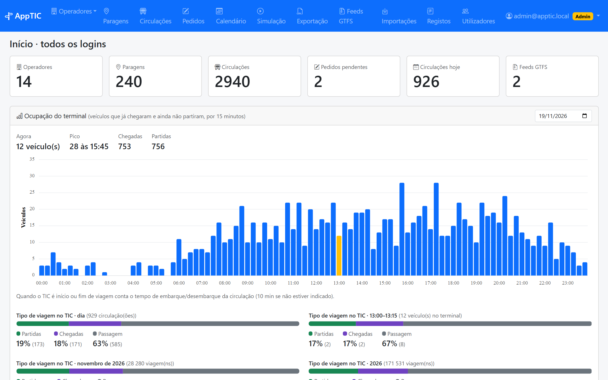
|
2. Operadores e grupos de operadores
Ficha de cada operador: NIF, alvará e validade, âmbito (nacional/internacional), cor de identificação e paragens do TIC no seu GTFS.
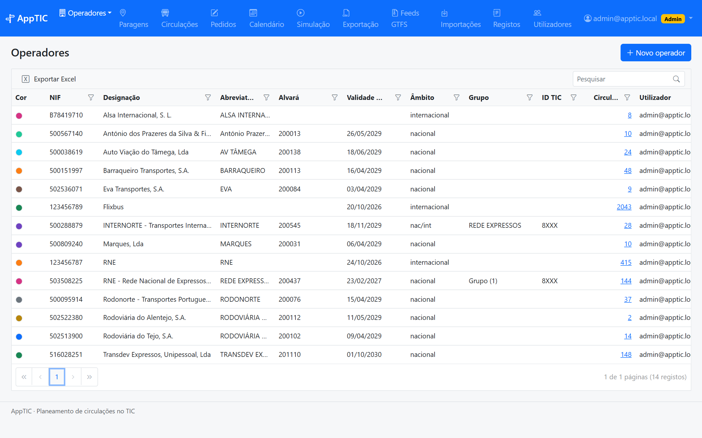
Os grupos (ex.: Rede Expressos) juntam vários operadores. Os utilizadores do grupo veem e fazem pedidos para todos os
operadores do grupo, e nos operadores do grupo vale o prefixo de ID TIC do grupo. Um operador existente pode passar a grupo.
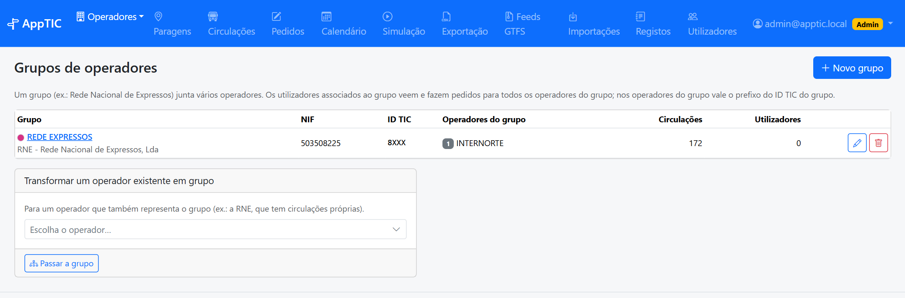
|
3. Declarações (DCP)
As declarações seguem o formato Ano.Número.Versão (ex.: 2027.62.01) e são anuais:
- cada nova circulação recebe uma nova declaração (número seguinte no ano, versão 00);
- a versão sobe automaticamente quando muda o horário de uma circulação da declaração (ou manualmente, com motivo);
- a renovação passa todas as declarações para o ano seguinte, com numeração nova ou mantendo os números.
Ao criar uma declaração escolhe-se o operador declarante e as circulações numa lista já filtrada por esse operador.
A lista pode ser vista por declaração ou por circulação e exportada para Excel.
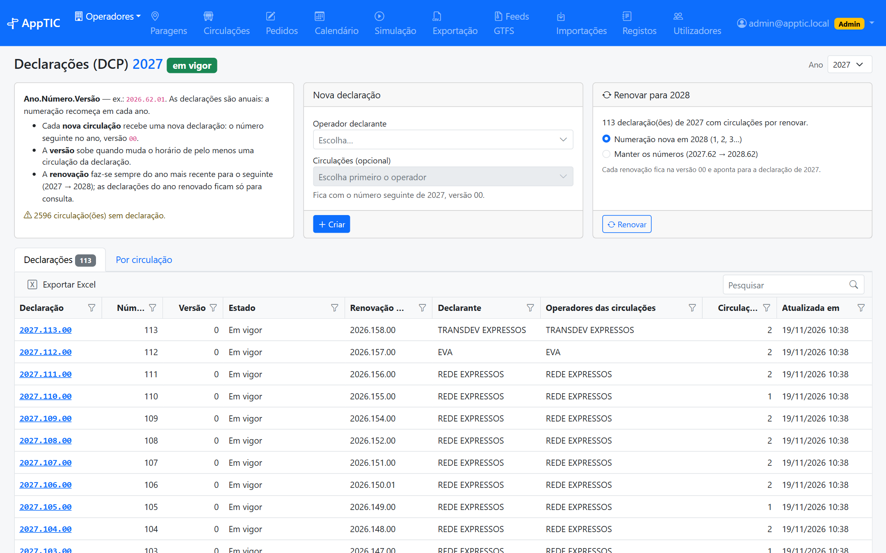
No detalhe vê-se o histórico de versões e é possível associar ou retirar circulações, criar uma nova versão e mudar o declarante.
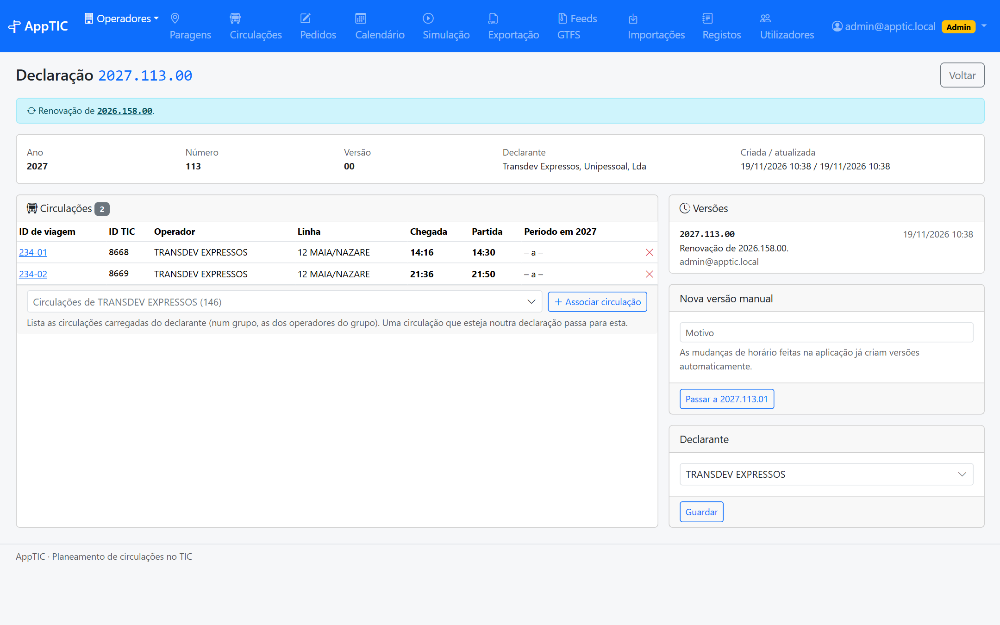
|
4. Numeração do ID TIC
O ID TIC é o prefixo do operador seguido de 3 dígitos sequenciais (prefixo 8 → 8001…8999). Esta página mostra, por
prefixo, o intervalo, os números utilizados, o próximo número e os livres. Lista também os operadores sem prefixo e os ID TIC
a rever (duplicados ou fora do intervalo). As novas circulações recebem automaticamente o número seguinte.
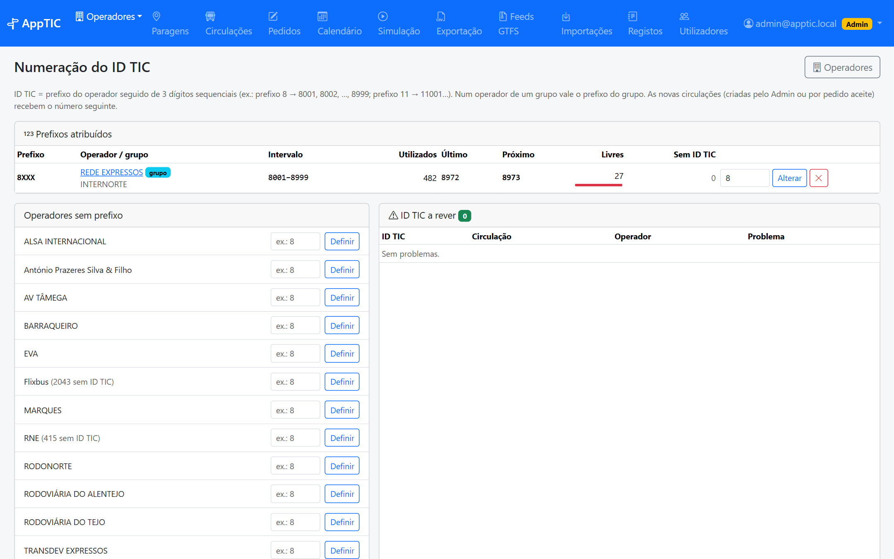
|
5. Circulações
Grelha com todas as circulações, com pesquisa, filtros por coluna e filtro por operador ou lote de importação.
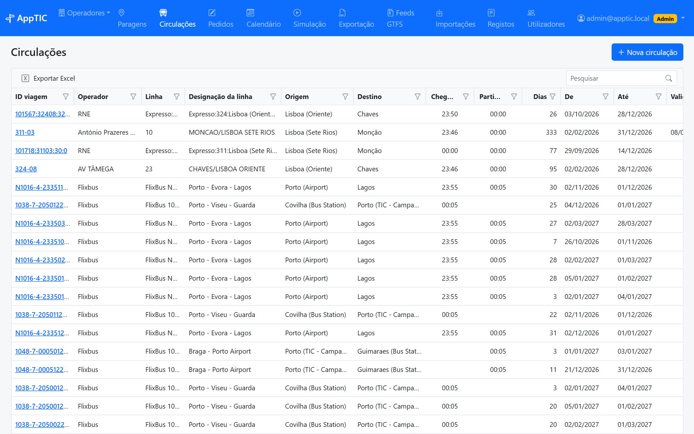
Na ficha de cada circulação:
- Horas no TIC por período: define-se a chegada e a partida para um intervalo de datas, guardando o histórico;
- Calendário: marcar ou desmarcar dias (por período e dia da semana, ou dia a dia);
- Percurso a partir do TIC: sequência ordenada de paragens;
- ID TIC, declaração (DCP) associada e pedidos relacionados.
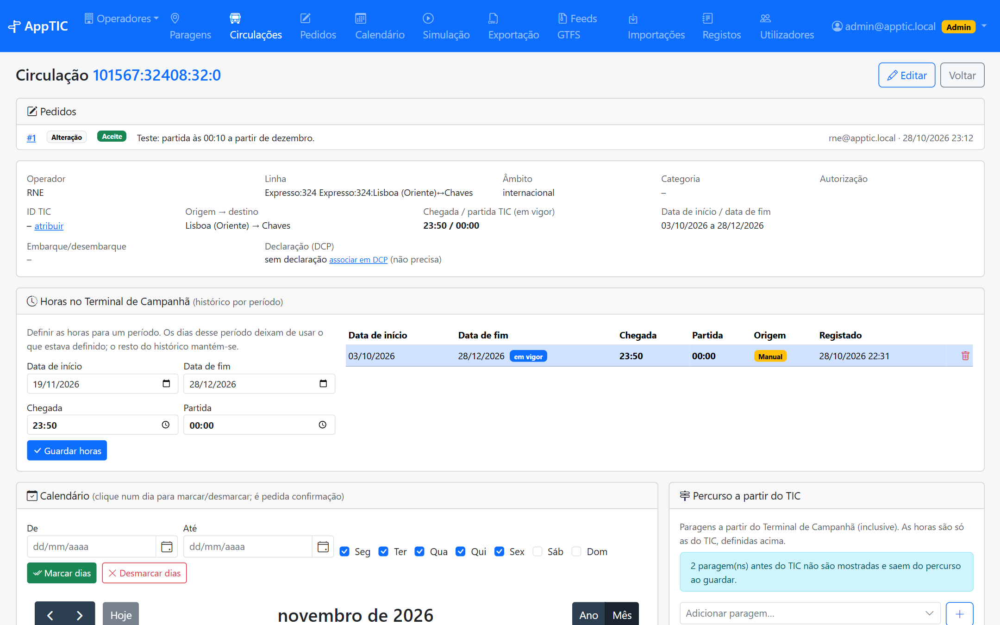
|
6. Pedidos
Os operadores não editam diretamente: submetem pedidos de três tipos: nova circulação, alteração
(horas e/ou calendário a partir de uma data) ou remoção. No pedido de nova circulação indica-se a linha, origem/destino, horas no TIC
e os dias num calendário anual.
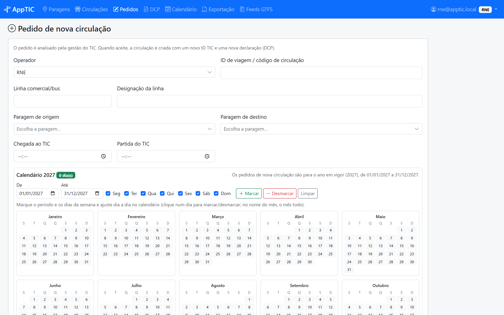
A gestão do TIC vê a lista de pedidos, analisa cada um e aceita (aplicando a alteração; numa nova circulação é atribuído
o ID TIC e criada a DCP) ou rejeita, com resposta ao operador.
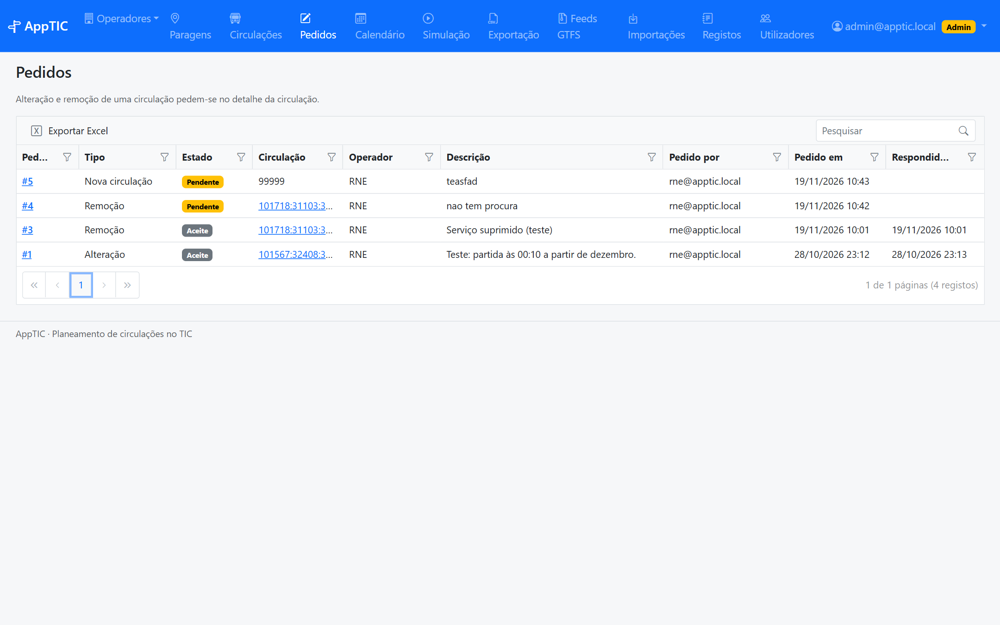
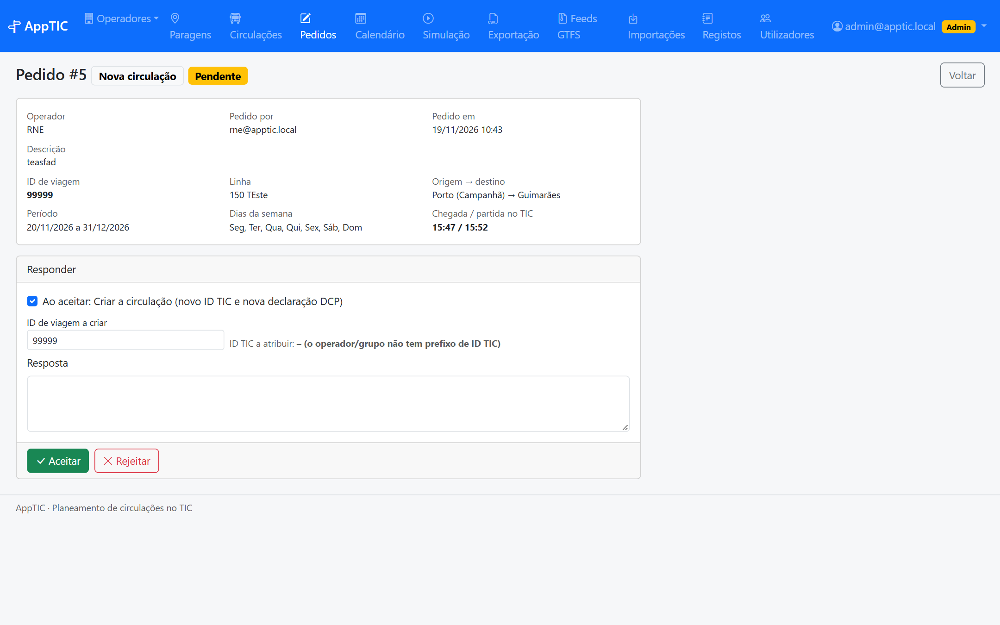
|
7. Calendário
Calendário de chegadas e partidas no TIC (vista de mês, semana, dia ou lista), com as circulações coloridas pela cor do operador, filtro por operador
e por chegadas/partidas. Clicar num evento abre a circulação.
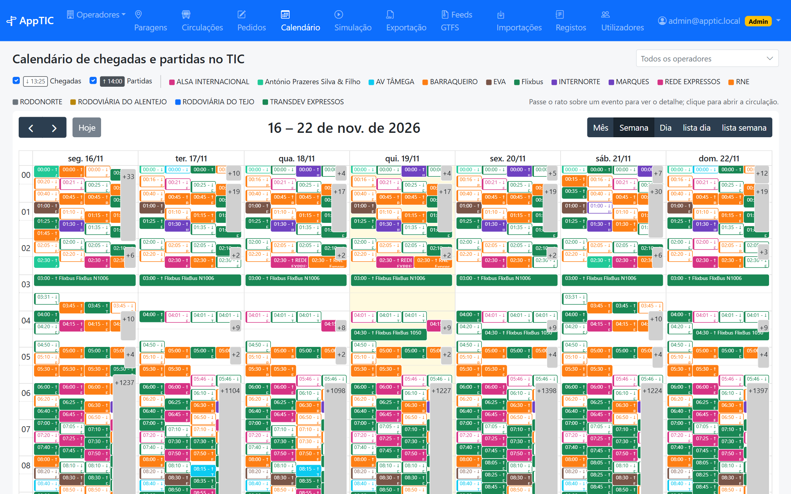
|
8. Simulação do terminal
Simula um dia de operação na planta esquemática do terminal (17 cais), a partir dos horários registados:
- cais agrupados por categoria (Lisboa, Internacional, Norte de Portugal, Comum), com cais de reserva quando a categoria está cheia;
- zonamento por região ou por tempo de permanência;
- Planear dia: o algoritmo de otimização atribui cais ao maior número possível de autocarros;
- reprodução com velocidade ajustável (até 1 min/s), painel de cais, despacho de carros fora do plano e registo de eventos.
A simulação é isolada: não altera a operação nem a base de dados.
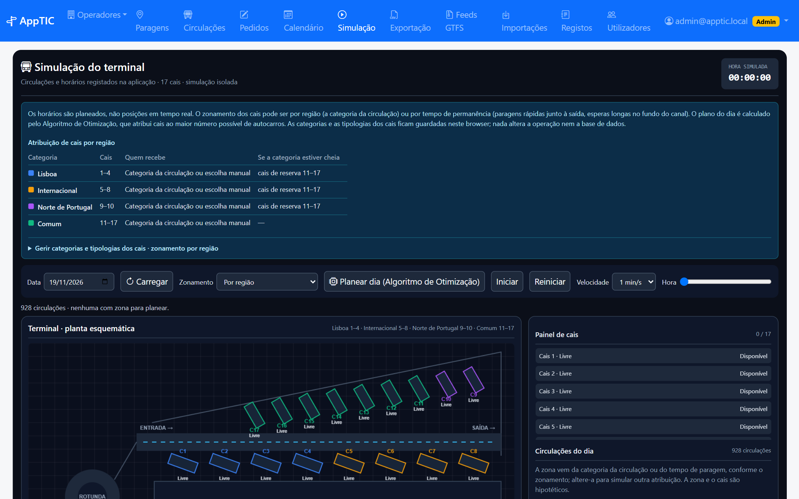
|
9. Exportação do planeamento
Gera o ficheiro Horarios.csv (separador ;, ISO-8859-1) para um dia, semana ou período, para todos
os operadores ou para um operador/grupo, com uma linha por circulação e dia. Opcionalmente calcula os cais (até 7 dias).
O botão Pré-visualizar mostra as primeiras 100 linhas antes de exportar.
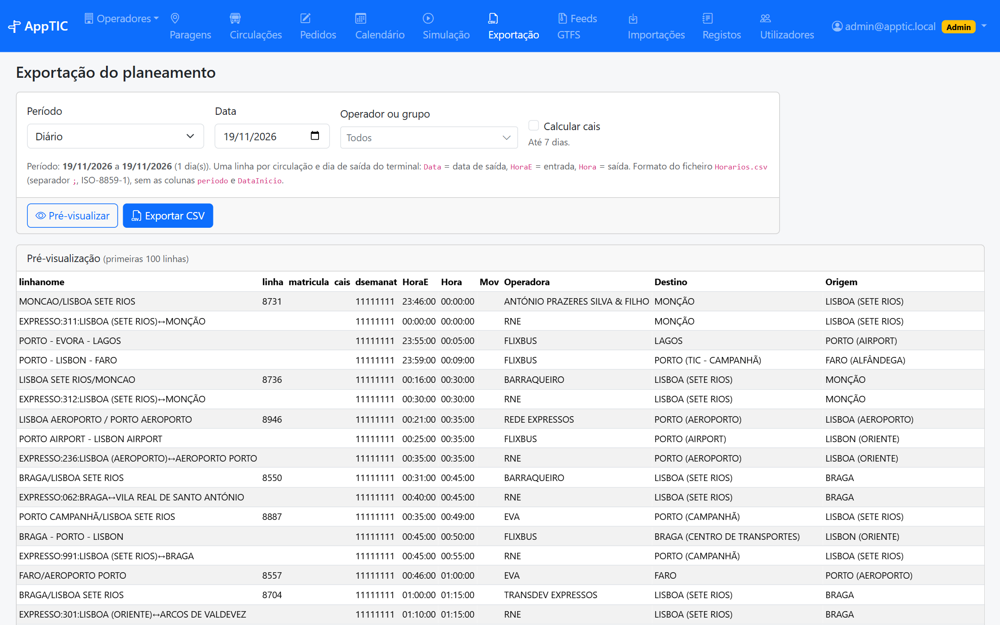
|
10. Feeds GTFS
Cada operador carrega o seu feed GTFS (.zip). A aplicação valida-o (ficheiros obrigatórios, cabeçalhos, datas), avisa se
for repetido e gera um GTFS filtrado TIC só com as viagens que passam nas paragens do TIC. O feed pode depois ser importado como circulações.
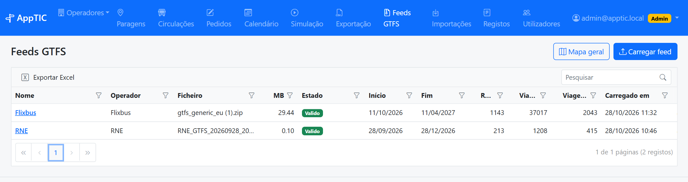
|
11. Importações (Excel e GTFS)
Cada importação fica registada como um lote numerado, que pode ser consultado, reimportado, atualizado com um ficheiro novo ou eliminado.
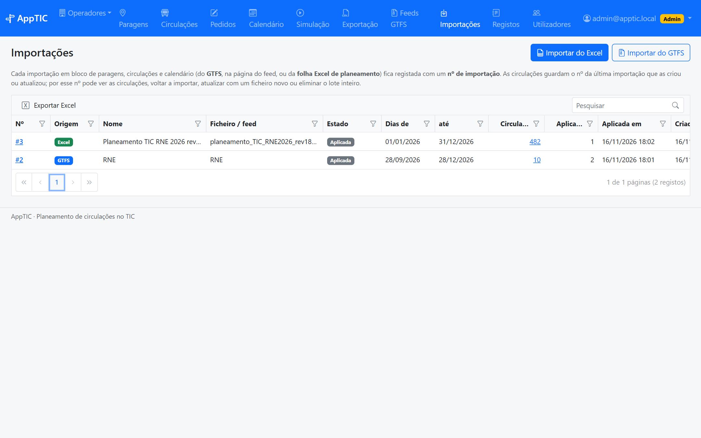
A importação da folha Excel de planeamento (operadores, paragens, circulações, calendário e percursos) mostra primeiro o que
vai ser criado ou atualizado e os avisos de leitura; só depois se aplica. No mesmo ecrã é possível comparar com um feed GTFS
(horas no TIC, dias e sequência de paragens).
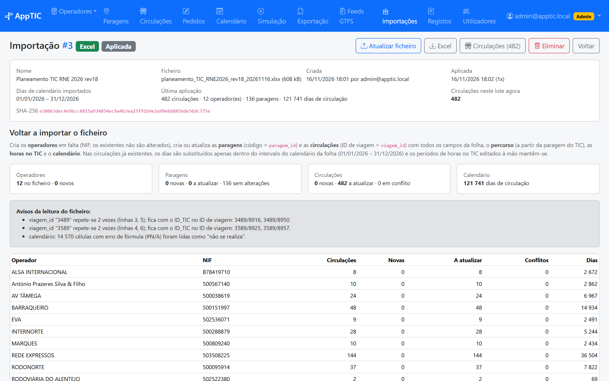
|
12. Utilizadores e registos
O administrador cria os utilizadores e associa cada um a um operador ou grupo. Em Registos fica o histórico de
atividade: sessões, carregamentos GTFS, alterações de dados e administração.
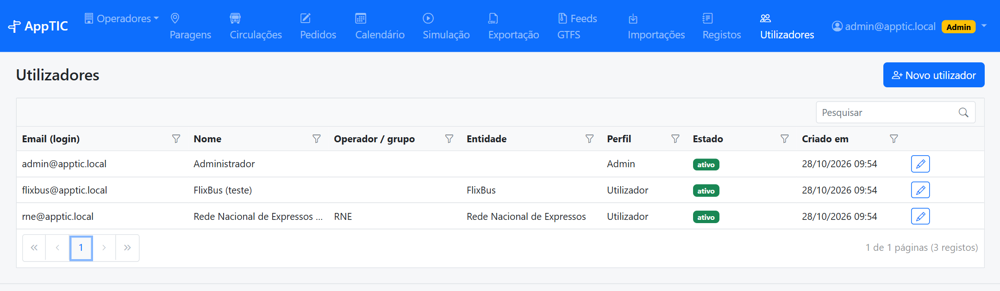
|
13. O que vê um operador
Com o perfil de operador o menu é reduzido (Paragens, Circulações, Pedidos, DCP, Calendário, Exportação, Feeds GTFS) e toda a
informação está limitada ao seu operador ou grupo. A página inicial avisa dos alvarás e autorizações a expirar nos próximos 60 dias.
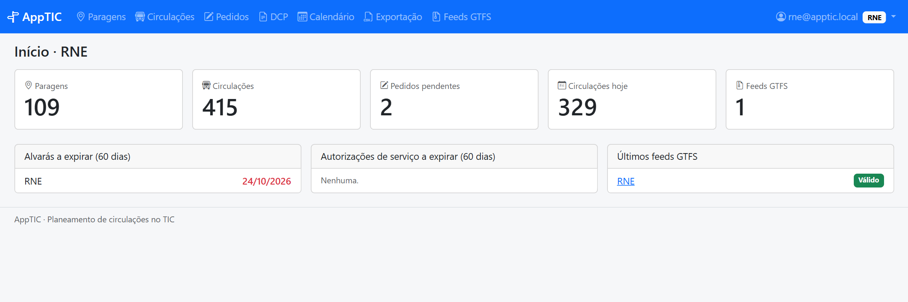
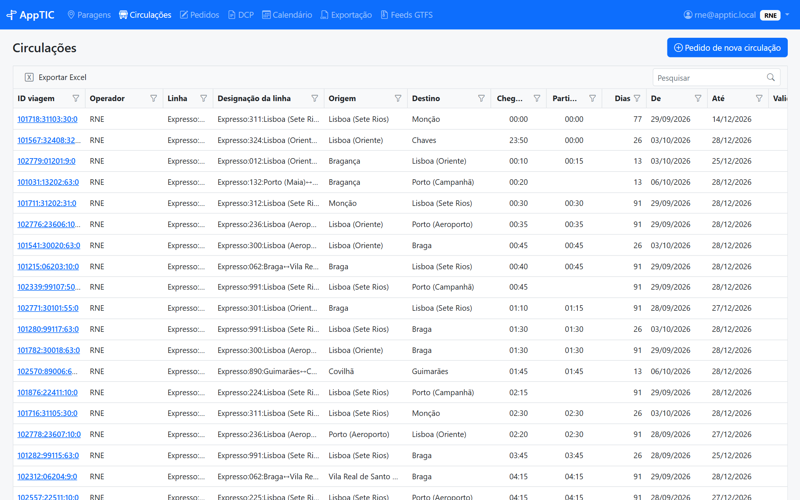
|
|
Fico disponível para qualquer esclarecimento ou para uma demonstração.
Com os melhores cumprimentos,
Arménio Miranda
|
|